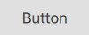
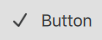
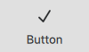

AbstractButton QML Type
Abstract base type providing functionality common to buttons. More...
| Import Statement: | import QtQuick.Controls 2.5 |
| Since: | Qt 5.7 |
| Inherits: | |
| Inherited By: | Button, CheckBox, DelayButton, ItemDelegate, MenuBarItem, MenuItem, RadioButton, Switch, and TabButton |
Properties
- action : Action
- autoExclusive : bool
- autoRepeat : bool
- autoRepeatDelay : int
- autoRepeatInterval : int
- checkable : bool
- checked : bool
- display : enumeration
- down : bool
- icon
- icon.name : string
- icon.source : url
- icon.width : int
- icon.height : int
- icon.color : color
- implicitIndicatorHeight : real
- implicitIndicatorWidth : real
- indicator : Item
- pressX : real
- pressY : real
- pressed : bool
- text : string
Signals
- canceled()
- clicked()
- doubleClicked()
- pressAndHold()
- pressed()
- released()
- toggled()
Methods
- void toggle()
Detailed Description
AbstractButton provides the interface for controls with button-like behavior; for example, push buttons and checkable controls like radio buttons and check boxes. As an abstract control, it has no delegate implementations, leaving them to the types that derive from it.
See also ButtonGroup and Button Controls.
Property Documentation
action : Action |
This property holds the button action.
This property was introduced in QtQuick.Controls 2.3 (Qt 5.10).
See also Action.
autoExclusive : bool |
This property holds whether auto-exclusivity is enabled.
If auto-exclusivity is enabled, checkable buttons that belong to the same parent item behave as if they were part of the same ButtonGroup. Only one button can be checked at any time; checking another button automatically unchecks the previously checked one.
Note: The property has no effect on buttons that belong to a ButtonGroup.
RadioButton and TabButton are auto-exclusive by default.
autoRepeat : bool |
This property holds whether the button repeats pressed(), released() and clicked() signals while the button is pressed and held down.
If this property is set to true, the pressAndHold() signal will not be emitted.
The default value is false.
The initial delay and the repetition interval are defined in milliseconds by autoRepeatDelay and autoRepeatInterval.
autoRepeatDelay : int |
This property holds the initial delay of auto-repetition in milliseconds. The default value is 300 ms.
This property was introduced in QtQuick.Controls 2.4 (Qt 5.11).
See also autoRepeat and autoRepeatInterval.
autoRepeatInterval : int |
This property holds the interval of auto-repetition in milliseconds. The default value is 100 ms.
This property was introduced in QtQuick.Controls 2.4 (Qt 5.11).
See also autoRepeat and autoRepeatDelay.
checkable : bool |
This property holds whether the button is checkable.
A checkable button toggles between checked (on) and unchecked (off) when the user clicks on it or presses the space bar while the button has active focus.
Setting checked to true forces this property to true.
The default value is false.
See also checked.
display : enumeration |
This property determines how the icon and text are displayed within the button.
| Display | Result |
|---|---|
AbstractButton.IconOnly | |
AbstractButton.TextOnly |  |
AbstractButton.TextBesideIcon |  |
AbstractButton.TextUnderIcon |  |
This property was introduced in QtQuick.Controls 2.3 (Qt 5.10).
down : bool |
This property group was added in QtQuick.Controls 2.3.
| Name | Description |
|---|---|
| name | This property holds the name of the icon to use. The icon will be loaded from the platform theme. If the icon is found in the theme, it will always be used; even if icon.source is also set. If the icon is not found, icon.source will be used instead. For more information on theme icons, see QIcon::fromTheme(). |
| source | This property holds the name of the icon to use. The icon will be loaded as a regular image. If icon.name is set and refers to a valid theme icon, it will always be used instead of this property. |
| width | This property holds the width of the icon. The icon's width will never exceed this value, though it will shrink when necessary. |
| height | This property holds the height of the icon. The icon's height will never exceed this value, though it will shrink when necessary. |
| color | This property holds the color of the icon. The icon is tinted with the specified color, unless the color is set to |
| cache | This property specifies whether the icon should be cached. The default value is true. |
See also text, display, and Icons in Qt Quick Controls.
[read-only] implicitIndicatorHeight : real |
This property holds the implicit indicator height.
The value is equal to indicator ? indicator.implicitHeight : 0.
This is typically used, together with implicitContentHeight and implicitBackgroundHeight, to calculate the implicitHeight.
This property was introduced in QtQuick.Controls 2.5 (Qt 5.12).
See also implicitIndicatorWidth.
[read-only] implicitIndicatorWidth : real |
This property holds the implicit indicator width.
The value is equal to indicator ? indicator.implicitWidth : 0.
This is typically used, together with implicitContentWidth and implicitBackgroundWidth, to calculate the implicitWidth.
This property was introduced in QtQuick.Controls 2.5 (Qt 5.12).
See also implicitIndicatorHeight.
indicator : Item |
This property holds the indicator item.
[read-only] pressX : real |
This property holds the x-coordinate of the last press.
Note: The value is updated on touch moves, but left intact after touch release.
This property was introduced in QtQuick.Controls 2.4 (Qt 5.11).
See also pressY.
[read-only] pressY : real |
This property holds the y-coordinate of the last press.
Note: The value is updated on touch moves, but left intact after touch release.
This property was introduced in QtQuick.Controls 2.4 (Qt 5.11).
See also pressX.
[read-only] pressed : bool |
This property holds whether the button is physically pressed. A button can be pressed by either touch or key events.
See also down.
text : string |
This property holds a textual description of the button.
Note: The text is used for accessibility purposes, so it makes sense to set a textual description even if the content item is an image.
See also icon, display, and contentItem.
Signal Documentation
This signal is emitted when the button loses mouse grab while being pressed, or when it would emit the released signal but the mouse cursor is not inside the button.
This signal is emitted when the button is interactively clicked by the user via touch, mouse, or keyboard.
This signal is emitted when the button is interactively double clicked by the user via touch or mouse.
This signal is emitted when the button is interactively pressed and held down by the user via touch or mouse. It is not emitted when autoRepeat is enabled.
This signal is emitted when the button is interactively pressed by the user via touch, mouse, or keyboard.
This signal is emitted when the button is interactively released by the user via touch, mouse, or keyboard.
This signal is emitted when a checkable button is interactively toggled by the user via touch, mouse, or keyboard.
This signal was introduced in QtQuick.Controls 2.2 (Qt 5.9).